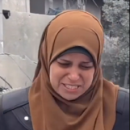
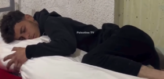
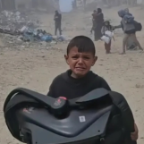

يوسف
شعره كيرلى وأبيضانى وحلو.. كلمات قد تبدو لك عادية ولكنها مزقت قلوبنا جميعًا، فبمثابة رؤية هذه الكلمات على صفحات السوشيال ميديا تبكى وتشعر بالعجز والحزن.. وظهرت تلك الكلمات في فيديو تم تداوله لطبيب فلسطيني وزوجته يبحثان عن طفلهما وسط المصابين والجثث بعد عمليات القصف من قبل الاحتلال الإسرائيلي.

أبو هارون
قال الرجل السبعيني الذي استشهد ولداه لمن حوله كي يثبتهم أمام مشاهد الموت التي تحيط بهم: تعيطش يا زلمه! انت زلمه كلنا شهداء كلنا مشاريع شهداء قول ” إنا لله وإنا إليه راجعون ، اللهم آجرني في مصيبتي، وأخلف لي خيرًا منها ” مالكم ياعمي شدوا حيلكم ارض جهاد هذه وارض رباط كلنا في سبيل الله.

كلهم جوا...
انهيار وبكاء سيدة فلسطينية ذهبت لإحضار الطحين وعادت لتتفاجأ بأن منزلها قد قصفته الطائرات الحربية الإسرائيلية فوق رؤوس أفراد عائلتها.صراخ السيدة فوق ركام منزلها وقولها "كلهم جوا.. رحت أجيب الطحين.. زوجي وأولادي"، بينما يتعالى صوت الطيران فوق المنطقة.

الوداع الأخير..
بهذه العبارة عنونت قصة, ويظهر فيها شاب من أهالي غزة وهو نائم ويحتضن جثمان والدته التي استشهدت بالقصف الإسرائيلي على مدينة رفح جنوبي قطاع غزة.

خايف..
"وحياة ربنا خايف" كلمات رددها طفل فلسطيني هارب لحظة قصف جيش الاحتلال الإسرائيلي لمجمع الشفاء ومحيطه، وانتشرت عبر مواقع التواصل كلمات الطفل الذي كان يبحث عن مكان آمن يلجأ إليه، وهو يحمل سرير شقيقه الصغير.
تتحدث هذه الصفحة عن آثار الإبادة الجماعية التي تجري في إسرائيل وفلسطين
#غزة_تحت_القصف #فلسطين #أوقفوا_الإبادة_الجماعية
انا اقف مع فلسطين